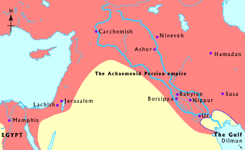

Choose a map
Ancient Cities
Terrain
Modern political
Civilizations over time
Natural resources
Geographical features
Babylon map of the world
Mesopotamia in about 500 B.C.

Choose a date
3000 - 2300 B.C.
2250 B.C.
2050 B.C.
1800 B.C.
1750 B.C.
1500 B.C.
1200 B.C
650 B.C.
550 B.C.
500 B.C.